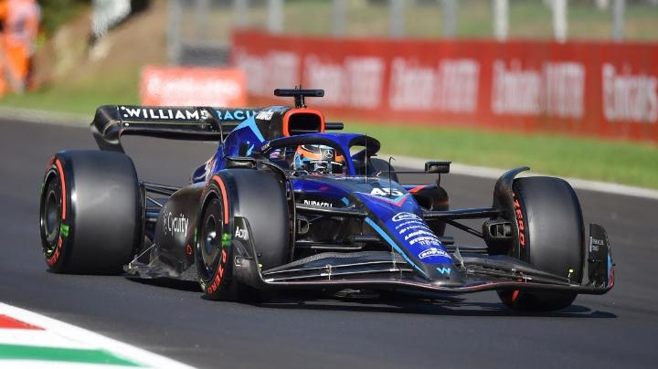

Berita Terkini
Formula 1 Cina 2023 Dibatalkan Lagi, Apa Penyebabnya?

Grand Prix Formula 1 Cina dipastikan tidak akan masuk dalam agenda F1 2023. Ini merupakan keempat kalinya Formula 1 Cina dibatalkan secara berturut-turut akibat masalah Covid-19 yang belum juga usai.
Formula 1 Cina sendiri terakhir kali dilangsungkan sebelum pandemi Covid-19 melanda, atau pada musim 2019. Kondisi ini membuat pemerintah Cina membatalkan hampir seluruh kejuaraan internasional, kecuali Olimpiade Beijing.
Padahal saat ini Cina mulai melonggarkan pembatasan Covid-19 setelah protes masyarakat untuk mengakhiri lockdown. Kendati begitu, ajang balap Formula 1 Cina 2023 tetap dipastikan batal.
“Formula 1 mengonfirmasi, setelah berbicara dengan promotor dan otoritas terkait, bahwa Grand Prix China 2023 batal digelar karena kesulitan yang terus berlanjut akibat situasi Covid-19,” bunyi pernyataan Formula 1.
Batalnya balapan Formula 1 Cina 2023 membuat pihak penyelenggara mulai mencari opsi alternatif untuk menggantikan seri tersebut. Saat ini ada dua negara yang dipertimbangkan masuk dalam agenda F1 2023, yakni Portugal dan Turki.
“Formula 1 sedang menimbang opsi alternatif untuk menggantikan slot China pada kalender 2023 dan akan mengumumkannya pada waktunya nanti,” lanjut pernyataan Formula 1, dilansir dari laman resminya.
Sekedar informasi tambahan, Portugal telah menjadi tuan rumah Grand Prix Formula 1 pada 2020 dan 2021. Sementara itu Sirkuit Istanbul Park, Turki, terakhir kali menyelenggarakan balapan pada musim 2021.
Link Referesni : https://otomotif.tempo.co/read/1664186/formula-1-cina-2023-dibatalkan-lagi-apa-penyebabnya
Populer
Valentino Rossi mengaku kecepatan motornya terus membaik dan mulai beradaptasi dengan mesin baru.Rio Haryanto berusaha semaksimal mungkin pada balapan pertama dan dia selalu berdoa agar balapan lancar.